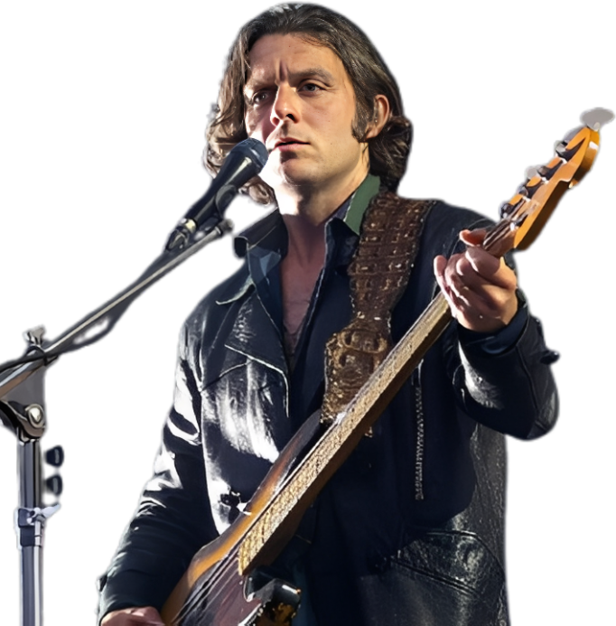

TRIBUTO A BANDA
Vocalista e Guitarrista
Alex Tuner
Baterista
Matt Helders
Baixista
Nick O’Malley
Guitarrista
Jamie Cook
O Arctic Monkeys é uma banda britânica de rock alternativo e indie rock, formada em 2002, na cidade de Sheffield, Inglaterra. O grupo é composto por Alex Turner (vocal e guitarra), Jamie Cook (guitarra), Matt Helders (bateria) e Nick O’Malley (baixo). Desde o início, a banda chamou atenção por suas letras inteligentes, riffs marcantes e forte identidade musical. O sucesso veio rapidamente com o álbum de estreia Whatever People Say I Am, That’s What I’m Not (2006), considerado um marco do rock britânico moderno. O disco revelou músicas que se tornaram clássicos e colocou o Arctic Monkeys entre as bandas mais influentes da nova geração. Nos anos seguintes, o grupo mostrou constante evolução sonora, explorando diferentes estilos em álbuns como Favourite Worst Nightmare, Humbug e Suck It and See. Em 2013, com o lançamento de AM, a banda alcançou reconhecimento mundial, consolidando seu nome na história do rock com hits como “Do I Wanna Know?” e “R U Mine?”. Já em trabalhos mais recentes, como Tranquility Base Hotel & Casino (2018) e The Car (2022), o Arctic Monkeys apostou em uma sonoridade mais madura, sofisticada e experimental. Hoje, o Arctic Monkeys é referência no cenário musical internacional, conhecido por sua capacidade de se reinventar sem perder sua essência. Este site tributo celebra a trajetória, os álbuns e a influência de uma das bandas mais importantes do rock contemporâneo.